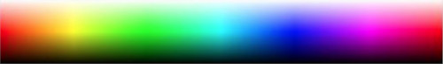
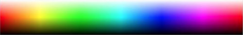

Podaj składową H koloru w kodzie HSL
0 do 30 czerwienie, do 60 żółcie, do 150 zielenie, do 250 niebieskie, do 360 fiolet i purpura
| Kolor główny | |||
| kolor2 | kolor3 | kolor4 | kolor5 |
0 do 30 czerwienie, do 60 żółcie, do 150 zielenie, do 250 niebieskie, do 360 fiolet i purpura
| Kolor główny | |||
| kolor2 | kolor3 | kolor4 | kolor5 |